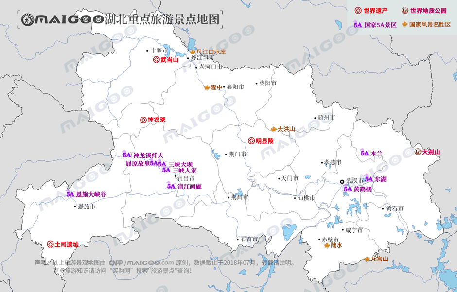

| | | | | |
| - | - | - | - | - |
|<b>别名</b>|鄂、楚、荆楚||<b>著名景点</b>|黄鹤楼、武汉东湖、神农架、武当山、长江三峡、隆中风景区等|
|<b>行政区类别</b>|省||<b>机 场</b>|武汉天河国际机场、十堰武当山机场、宜昌三峡机场等|
|<b>所属地区</b>|华中地区||<b>火车站</b>|武昌站、汉口站、武汉站、宜昌东站、襄阳站等|
|<b>下辖地区</b>|12个地级市，3个省直管市，1个自治州，1个林区||<b>车牌代码</b>|鄂A—鄂S|
|<b>电话区号</b>|027、0710—0728||<b>GDP</b>|36522.95亿元（2017年)|
|<b>邮政区码</b>|430000—443000||<b>人均GDP</b>|62061元（2017年)|
|<b>地理位置</b>|中国中部偏南、长江中游||<b>省树、省花</b>|水杉、梅花|
|<b>面 积</b>|18.59万平方千米||<b>著名高校</b>|武汉大学、华中科技大学、华农|
|<b>人 口</b>|5902万人（2017年常住人口）||<b>历史名人</b>|孟浩然、屈原、李时珍、王昭君|
|<b>方 言</b>|西南官话、江淮官话、赣语等||<b>行政区划代码</b>|420000|
|<b>气候条件</b>|亚热带季风性湿润气候||<b>党政领导</b>|省委书记：蒋超良、省长：王晓东|
| <b>湖北生活文化</b> | <b>湖北特色文化</b> | <b>湖北曲艺文化</b> | <b>湖北建筑文化</b> | <b>湖北宗教文化</b> |
| - | - | - | - | - |
| <a href="javascript:;" onclick="live(this);">习俗/民俗</a> | <a href="javascript:;" onclick="feature(this);">湖北传统手工艺文化</a> | <a href="javascript:;" onclick="art(this);">湖北楚剧</a> | <a href="javascript:;" onclick="building(this);">湖北建筑文化</a> | <a href="javascript:;" onclick="religion(this);">湖北庙宇/庙会</a> |
| <a href="javascript:;" onclick="live(this);">方言文化</a> | <a href="javascript:;" onclick="feature(this);">宜昌丝竹</a> | <a href="javascript:;" onclick="art(this);">湖北汉剧</a> | - | - |
| <a href="javascript:;" onclick="live(this);">节日文化</a> | <a href="javascript:;" onclick="feature(this);">武当武术</a> | <a href="javascript:;" onclick="art(this);">湖北大鼓</a> | - | - |
| <a href="javascript:;" onclick="live(this);">嫁娶文化</a> | <a href="javascript:;" onclick="feature(this);">汉江平原平影戏</a> | <a href="javascript:;" onclick="art(this);">湖北评书</a> |-|-|
| <a href="javascript:;" onclick="live(this);">饮食文化</a> | <a href="javascript:;" onclick="feature(this);">湖北地龙灯</a> | -|-|-|
| <a href="javascript:;" onclick="live(this);">湖北禁忌</a> | <a href="javascript:;" onclick="feature(this);">湖北非物质文化</a> |-| -|-|
## <i class="fa fa-file-text-o"></i>&nbsp;目录（Table of Contents）
+ [I. 总路线图（暂无）](#one)
+ [II. 景点](#two)
+ [III. 路线规划（暂无）](#three)
<h2 id="two"><i class="fa fa-star-o"></i>&nbsp;景点</h2>
